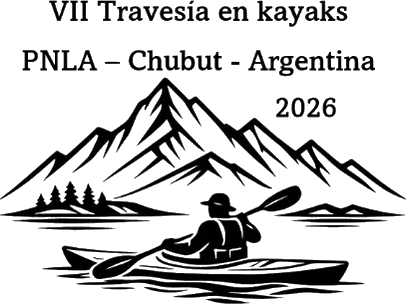
Edición 2026 · Parque Nacional Los Alerces
Auspiciantes
Una travesía universitaria de veinte kilómetros no se sostiene sola. Detrás hay organismos que la respaldan institucionalmente y comercios de Esquel y la Comarca del Ande que ponen equipamiento, imprenta, logística y mesa. Estos son.
01
Apoyo institucional
Organismos públicos y académicos que hacen posible navegar un área protegida con protocolos de conservación y seguridad náutica.
- Facultad de Ciencias Económicas UNPSJB
- Administración de Parques Nacionales
- Chubut Deportes
- Municipalidad de Esquel
- Prefectura Naval Argentina
- Ejército Argentino
FCE UNPSJB · Sede EsquelOrganizador principal
Impulsar la bajada en kayak fortalece nuestro vínculo con el territorio, el turismo activo de la Comarca del Ande y la vida saludable universitaria.
Intendencia PN Los AlercesCo-organización sustentable
Una muestra de uso público responsable en nuestros ríos y lagos, con cuidado de las especies nativas y las vertientes de agua pura.
Prefectura Naval ArgentinaSeguridad náutica
Embarcaciones de apoyo y comunicación permanente a lo largo de los 20 km entre el Lago Verde y el Lago Futalaufquen.
02
Comercios que acompañan
Reseñas provistas por cada auspiciante para la edición 2026.
-
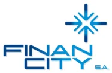
Gestión de patrimonio
FinanCity S.A.
Tu tiempo. Tu valor. Gestión de patrimonio independiente desde 1737.
En FinanCity S.A. te acompañamos en la gestión inteligente de tu patrimonio. Ya sea para hacer crecer tu capital, alcanzar independencia financiera o planificar el futuro, diseñamos soluciones a tu medida.
-
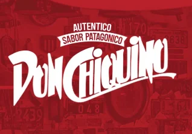
Restaurante · Pastas
Don Chiquino
Auténtico sabor patagónico. Pasta con magia.
Sorprendete con nuestras pastas, carnes, postres, cafetería y vinos.
-
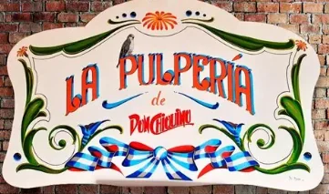
Parrilla
La Pulpería de Don Chiquino
Un restaurante con excelente parrilla argentina y un ambiente acogedor. Ofrece variedad de opciones de carne a la parrilla, postres y opciones veganas. Destacada calidad de la comida y servicio profesional.
-
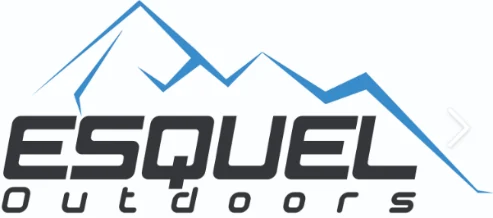
Equipamiento outdoor
Esquel Outdoors
Tu lugar para conectarte con la naturaleza y el deporte al aire libre.
Todo para tu aventura, en un solo lugar. Equipamos tu pasión por la naturaleza: pesca, camping y aventura. La Patagonia se vive preparado en Esquel Outdoors. Tu próxima travesía empieza acá, donde la aventura encuentra el equipamiento adecuado para cada necesidad.
-
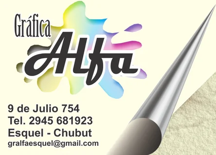
Imprenta y gráfica
Gráfica Alfa
Tus ideas, impresas con calidad.
Diseñamos, imprimimos, impactamos. La gráfica que da vida a tu imaginación.
-
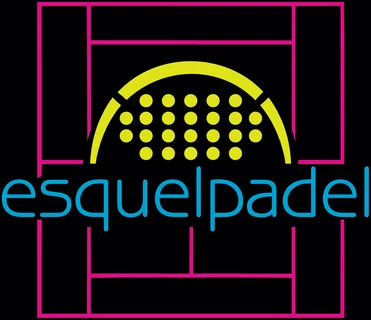
Complejo deportivo
Esquel Pádel
El pádel se vive en Esquel Pádel.
Tu punto de encuentro con la pasión. Jugá, divertite, entrená. Esquel Pádel es energía, amistad y competencia: la cancha que conecta deporte y naturaleza.
-
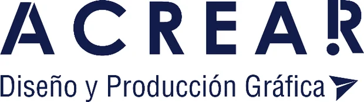
Diseño y producción gráfica
ACREAR
Servicio de diseño e impresión gráfica, DTF textil y UV, y corte y grabado láser.
-
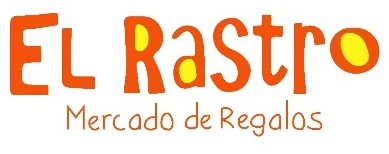
Regalería
El Rastro · Mercado de Regalos
Donde los objetos se transforman en obsequios.
Todo lo que necesitás para tu mate y regalería, en un solo lugar. Práctico, lindo y listo para salir a cualquier aventura. Te esperamos en el local para que descubras tu combo ideal.
-
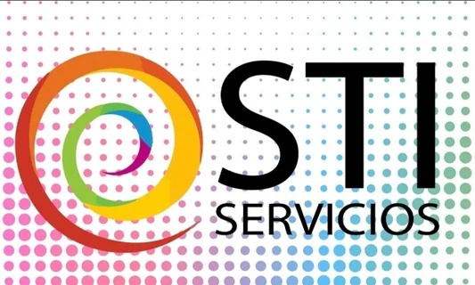
Informática y conectividad
STI Servicios
Distribuidor de insumos y consumibles de informática. Proveedor de Internet. Artículos de librería. Venta y alquiler de fotocopiadoras e impresoras. Servicio técnico.
-
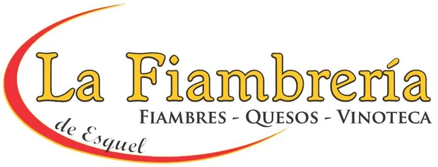
Fiambrería · Quesos · Vinoteca
La Fiambrería de Esquel
Sabores que te acompañan siempre.
Variedad, calidad y tradición en tu mesa. El rincón del buen gusto en Esquel: fiambres, bebidas y más, todo en un solo lugar. Más que fiambres, momentos para compartir.
-
Banca
Banco Patagonia
Vos y lo que querés.
Nos distinguimos por orientar nuestra vocación hacia el cliente.
-
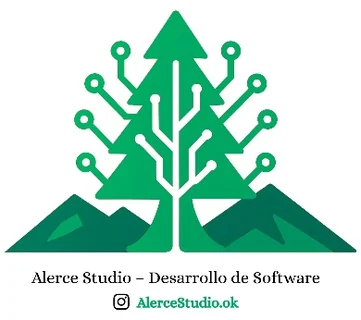
Desarrollo de software
Alerce Studio
Transformamos ideas en soluciones digitales.
Innovación que impulsa tu negocio. Software a tu medida, futuro en tus manos. Tecnología que conecta, soluciones que avanzan. De la Patagonia al mundo: innovación sin límites.
Edición 2026
Auspiciála próxima travesía
12 y 13 de diciembre de 2026 · Parque Nacional Los Alerces
Si tu comercio o institución quiere acompañar la bajada, escribinos y te contamos las formas de participación disponibles.
esquel@economicasunp.edu.ar